Batch 3: existing optimizers and representations
31 bounded diagnostics, 30 functions. All paper reproductions remain unresolved. A passing numerical check is separate from feasibility, convergence and published-figure matching. The coarser null-space/trust-constr and independent level-set/geometry runs are not a fair optimizer ranking.
MMA: local one-budget variant
Paper comparison: to fix · Execution checks: passed · Budget +1e-4: True · Extra constraints +1e-4: True
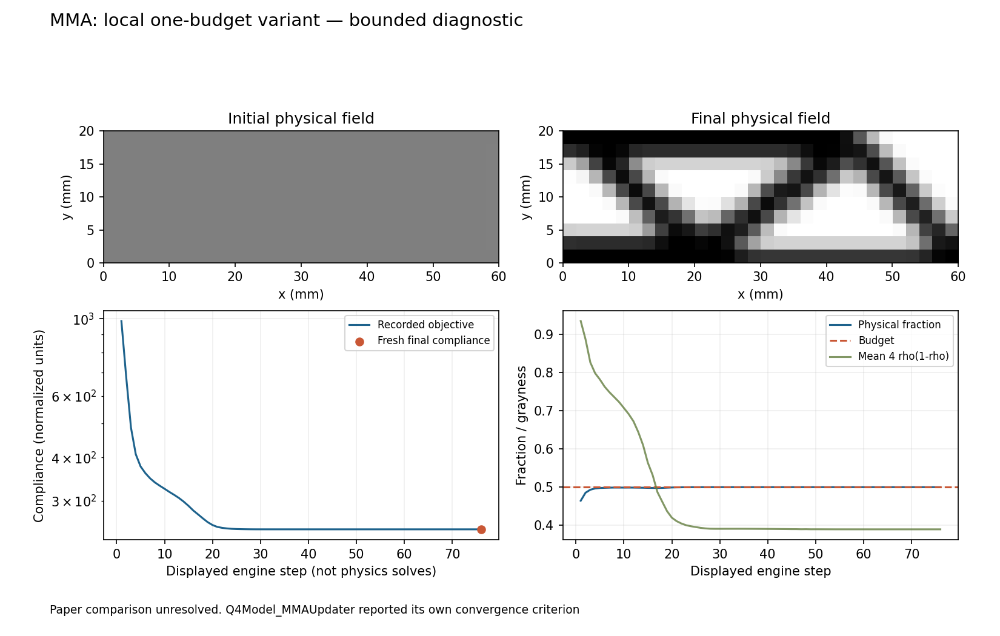
Svanberg MMA/GCMMA numerical examples: numbered panel and original problem inputs still to recover.
The common MBB diagnostic is not a Svanberg paper figure. Library algorithms, scaling, safeguards and stopping rules differ; matching final compliance alone would not establish algorithm equivalence.
Q4Model_MMAUpdater reported its own convergence criterion; fresh compliance 248.732; fraction 0.500000; grayness 0.3896.
Description and math · Numerical evidence · Next check
MMA through pyMOTO
Paper comparison: to fix · Execution checks: passed · Budget +1e-4: True · Extra constraints +1e-4: True
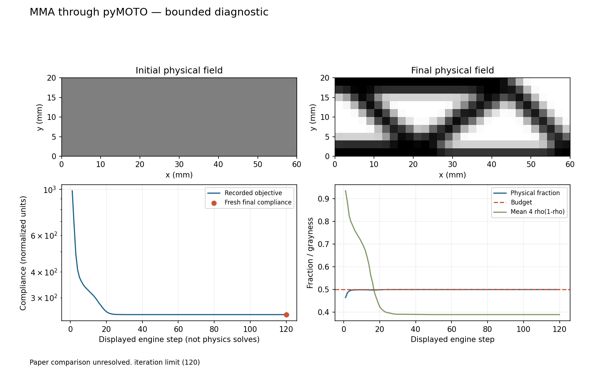
Svanberg MMA/GCMMA numerical examples: numbered panel and original problem inputs still to recover.
The common MBB diagnostic is not a Svanberg paper figure. Library algorithms, scaling, safeguards and stopping rules differ; matching final compliance alone would not establish algorithm equivalence.
iteration limit (120); fresh compliance 248.733; fraction 0.500000; grayness 0.3896.
Description and math · Numerical evidence · Next check
GCMMA through pyMOTO
Paper comparison: to fix · Execution checks: passed · Budget +1e-4: True · Extra constraints +1e-4: True
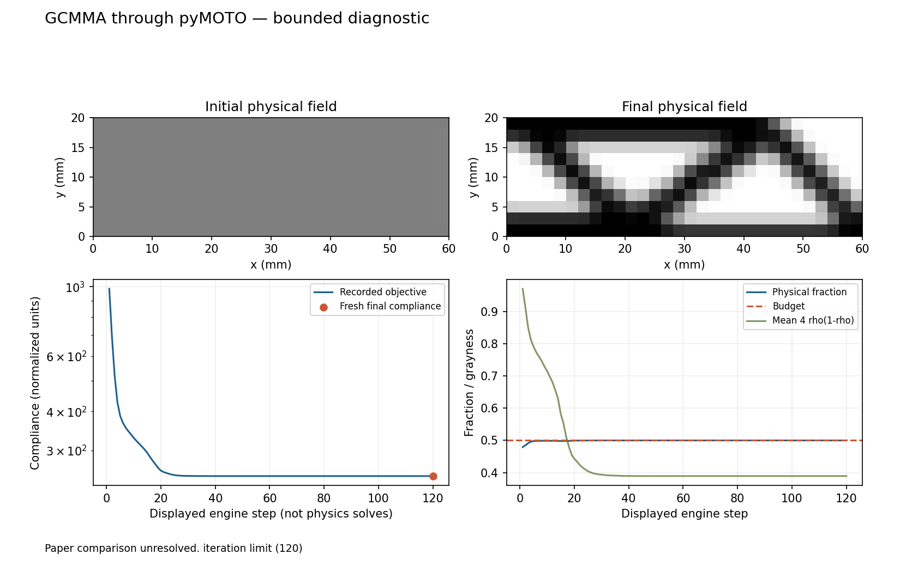
Svanberg MMA/GCMMA numerical examples: numbered panel and original problem inputs still to recover.
The common MBB diagnostic is not a Svanberg paper figure. Library algorithms, scaling, safeguards and stopping rules differ; matching final compliance alone would not establish algorithm equivalence.
iteration limit (120); fresh compliance 248.733; fraction 0.500000; grayness 0.3896.
Description and math · Numerical evidence · Next check
MMA through mmapy
Paper comparison: to fix · Execution checks: passed · Budget +1e-4: True · Extra constraints +1e-4: True
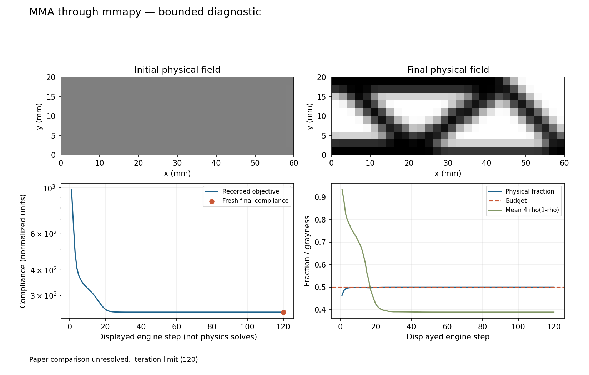
Svanberg MMA/GCMMA numerical examples: numbered panel and original problem inputs still to recover.
The common MBB diagnostic is not a Svanberg paper figure. Library algorithms, scaling, safeguards and stopping rules differ; matching final compliance alone would not establish algorithm equivalence.
iteration limit (120); fresh compliance 248.735; fraction 0.500000; grayness 0.3896.
Description and math · Numerical evidence · Next check
GCMMA through mmapy
Paper comparison: to fix · Execution checks: passed · Budget +1e-4: True · Extra constraints +1e-4: True
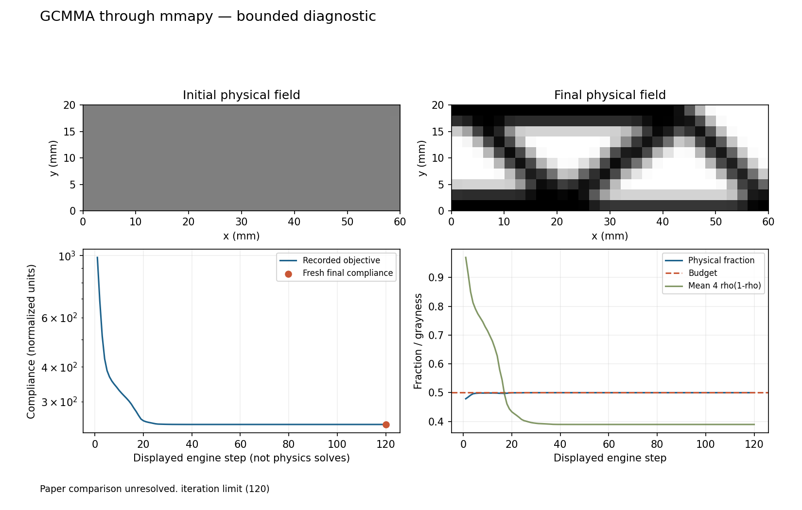
Svanberg MMA/GCMMA numerical examples: numbered panel and original problem inputs still to recover.
The common MBB diagnostic is not a Svanberg paper figure. Library algorithms, scaling, safeguards and stopping rules differ; matching final compliance alone would not establish algorithm equivalence.
iteration limit (120); fresh compliance 248.735; fraction 0.500000; grayness 0.3896.
Description and math · Numerical evidence · Next check
MMA through NLopt
Paper comparison: to fix · Execution checks: passed · Budget +1e-4: True · Extra constraints +1e-4: True
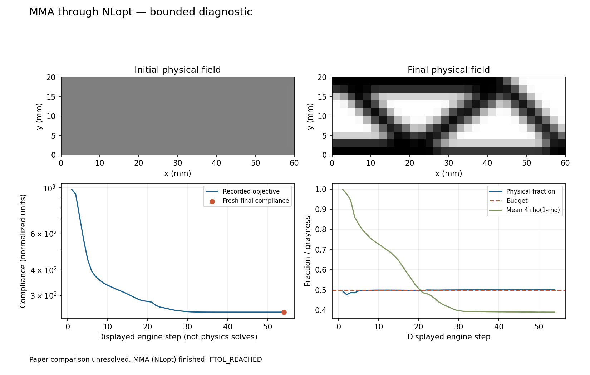
Svanberg MMA/GCMMA numerical examples: numbered panel and original problem inputs still to recover.
The common MBB diagnostic is not a Svanberg paper figure. Library algorithms, scaling, safeguards and stopping rules differ; matching final compliance alone would not establish algorithm equivalence.
MMA (NLopt) finished: FTOL_REACHED; fresh compliance 248.732; fraction 0.500000; grayness 0.3896.
Description and math · Numerical evidence · Next check
CONLIN mixed variables
Paper comparison: to fix · Execution checks: passed · Budget +1e-4: True · Extra constraints +1e-4: True
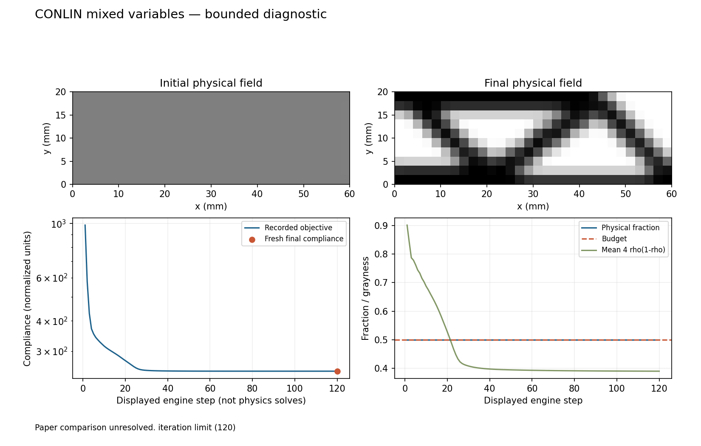
Fleury-Braibant (1986) numerical example: panel/inputs pending.
Own implementation with move limits; no published CONLIN trajectory is used as a reference.
iteration limit (120); fresh compliance 248.743; fraction 0.500000; grayness 0.3900.
Description and math · Numerical evidence · Next check
OC with several multipliers
Paper comparison: to fix · Execution checks: passed · Budget +1e-4: True · Extra constraints +1e-4: False
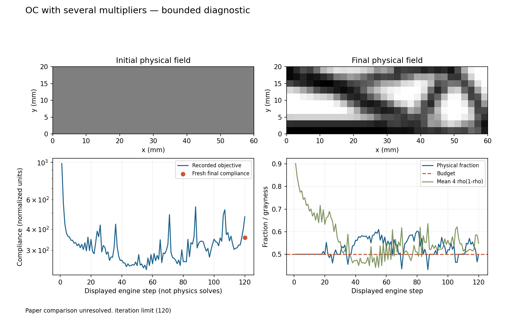
Zhou-Rozvany (1991) COC examples: panel/inputs pending.
Toporia's cyclic-bisection variant does not establish feasibility or convergence of general signed-gradient constraints.
iteration limit (120); fresh compliance 357.059; fraction 0.499977; grayness 0.5491.
Description and math · Numerical evidence · Next check
BESO soft kill
Paper comparison: to fix · Execution checks: passed · Budget +1e-4: True · Extra constraints +1e-4: True
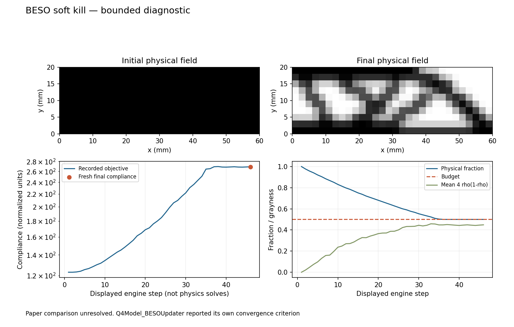
Huang-Xie BESO beam examples: exact panel and history pending.
Hard kill uses exact design void bounds but the physics retains ersatz stiffness. Sensitivity histories, additions and discrete ties matter.
Q4Model_BESOUpdater reported its own convergence criterion; fresh compliance 268.611; fraction 0.499761; grayness 0.4484.
Description and math · Numerical evidence · Next check
BESO hard kill
Paper comparison: to fix · Execution checks: passed · Budget +1e-4: True · Extra constraints +1e-4: True
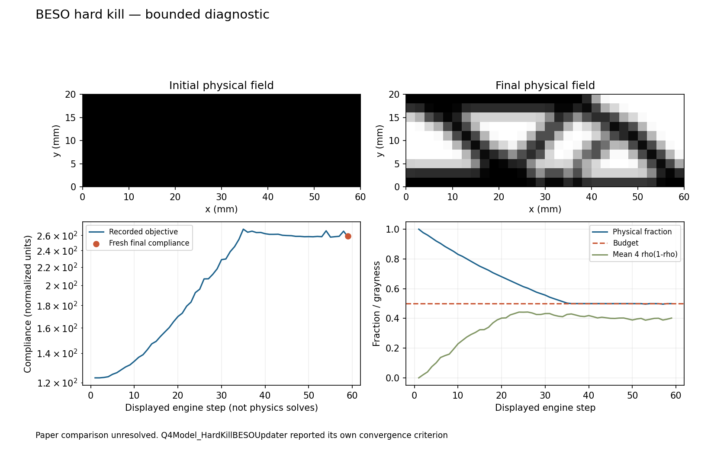
Huang-Xie BESO beam examples: exact panel and history pending.
Hard kill uses exact design void bounds but the physics retains ersatz stiffness. Sensitivity histories, additions and discrete ties matter.
Q4Model_HardKillBESOUpdater reported its own convergence criterion; fresh compliance 259.153; fraction 0.499013; grayness 0.4021.
Description and math · Numerical evidence · Next check
Floating projection update
Paper comparison: to fix · Execution checks: passed · Budget +1e-4: True · Extra constraints +1e-4: True
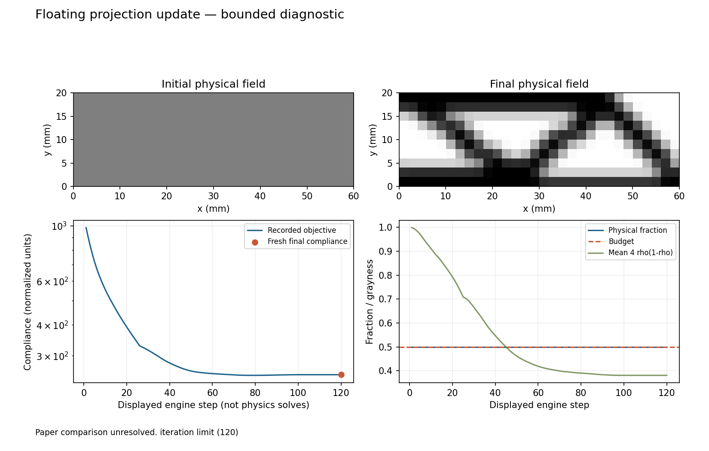
Huang (2020 preprint), FPTO examples: optimization panel/settings pending.
Own modular filter ordering and shared move limit; not the author's smooth-boundary reconstruction. A capped run may leave internal continuation unfinished.
iteration limit (120); fresh compliance 251.807; fraction 0.500000; grayness 0.3808.
Description and math · Numerical evidence · Next check
SiMPL primal and latent steps
Paper comparison: to fix · Execution checks: passed · Budget +1e-4: True · Extra constraints +1e-4: True
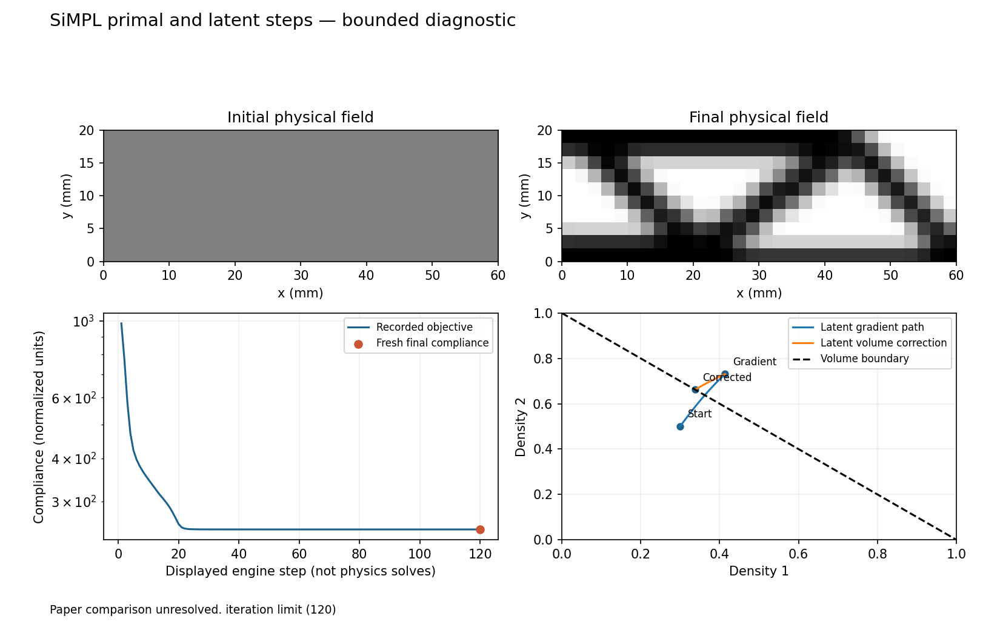
Kim et al., arXiv:2411.19421v2, Figure 1 schematic and equations 14-15; own numerical coordinates.
Schematic equation check only. The source does not specify these plotted coordinates. Toporia normalizes gradients and changes step adaptation, and does not reproduce the reported SiMPL-A/B histories.
iteration limit (120); fresh compliance 248.735; fraction 0.500000; grayness 0.3898.
Description and math · Numerical evidence · Next check
Adam moments and volume penalty
Paper comparison: to fix · Execution checks: passed · Budget +1e-4: False · Extra constraints +1e-4: True
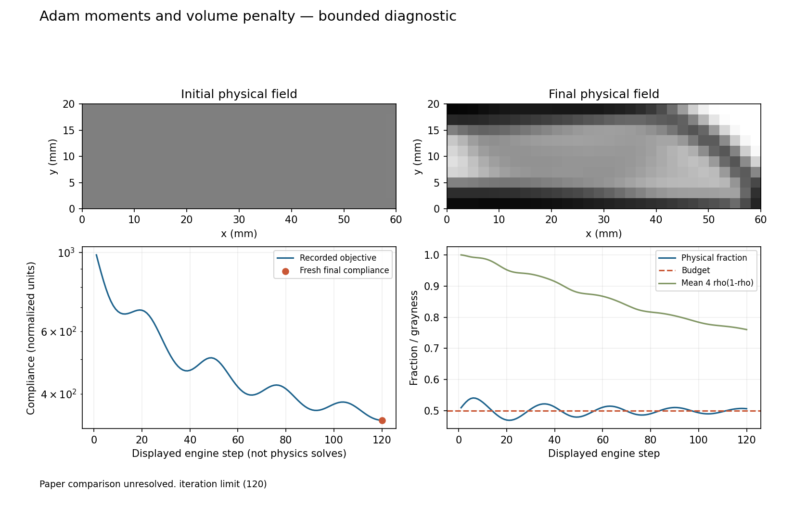
Kingma-Ba Algorithm 1; Figure 1 learning curves require the original data/task and are not this MBB diagnostic.
Algorithm recurrence agreement is not reproduction of machine-learning figures. Toporia's default beta1=0.5, decaying rate, clipping and volume penalty are topology-specific choices.
iteration limit (120); fresh compliance 337.28; fraction 0.506884; grayness 0.7604.
Description and math · Numerical evidence · Next check
PTO sensitivity-proxy variant
Paper comparison: to fix · Execution checks: passed · Budget +1e-4: True · Extra constraints +1e-4: True
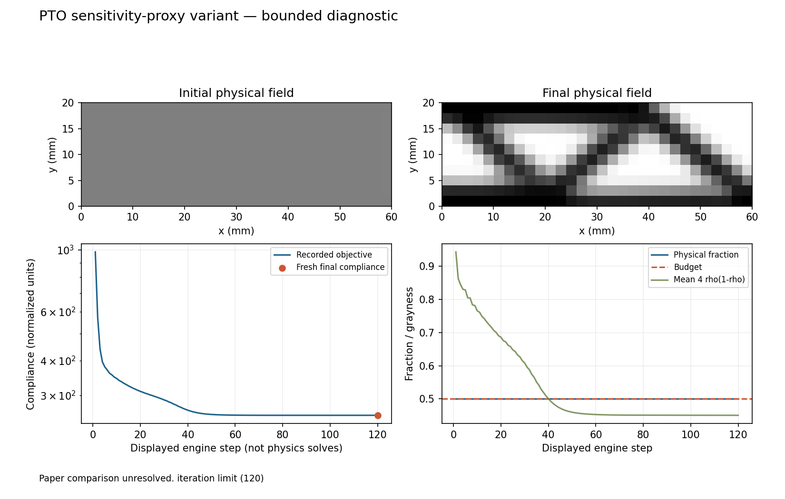
Biyikli-To (2015), Figure 3 MBB PTOc panel (120 by 40, fraction 0.35).
The published PTOc uses element compliance allocation; a negative filtered sensitivity is not proportional to it across varying density. Current q=3/relax=0.2 also differs from the source study. No source replication claimed.
iteration limit (120); fresh compliance 254.313; fraction 0.500000; grayness 0.4508.
Description and math · Numerical evidence · Next check
Native PTOc Figure 3 comparison · Mismatch report
TOBS integer design steps
Paper comparison: to fix · Execution checks: passed · Budget +1e-4: True · Extra constraints +1e-4: True
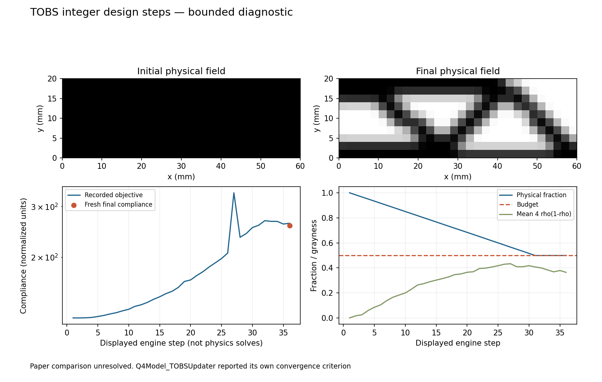
Picelli et al. (2021) TOBS101 examples: numbered panel/inputs pending.
Linearized feasibility is not nonlinear feasibility; Toporia's relaxation and trust controls must be aligned with the source.
Q4Model_TOBSUpdater reported its own convergence criterion; fresh compliance 257.222; fraction 0.498890; grayness 0.3644.
Description and math · Numerical evidence · Next check
Local-stress augmented Lagrangian
Paper comparison: to fix · Execution checks: passed · Budget +1e-4: False · Extra constraints +1e-4: False
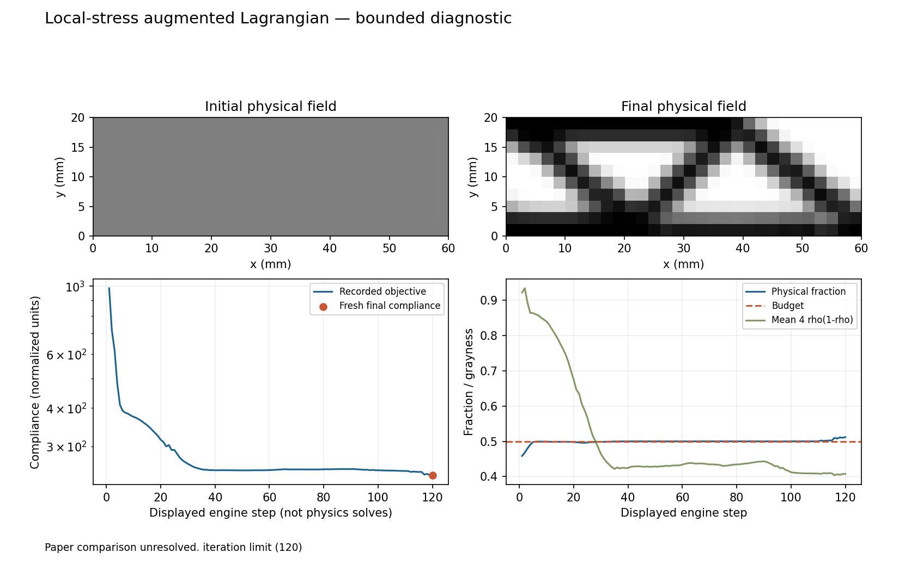
Giraldo-Londono-Paulino PolyStress examples: matching mesh, stress relaxation and numbered panel pending.
Q4 ersatz cells and the current density-relaxed stresses differ from PolyStress polygonal meshes. Inspect the exact stress ratio, not just small motion.
iteration limit (120); fresh compliance 241.552; fraction 0.511866; grayness 0.4078.
Description and math · Numerical evidence · Next check
SLSQP through SciPy
Paper comparison: to fix · Execution checks: passed · Budget +1e-4: True · Extra constraints +1e-4: True
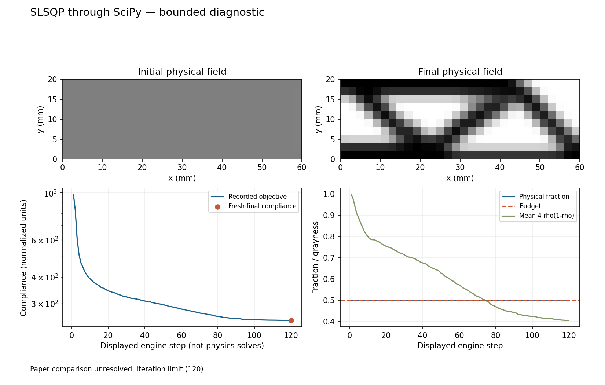
Original optimizer numerical example: identified figure and complete inputs pending; library documentation reviewed separately.
The coarse MBB companion checks adapter execution, not the source optimizer's paper figure or global optimality. Small steps, library success and feasibility are separate observations.
iteration limit (120); fresh compliance 249.624; fraction 0.500000; grayness 0.4058.
Description and math · Numerical evidence · Next check
SLSQP through NLopt
Paper comparison: to fix · Execution checks: passed · Budget +1e-4: True · Extra constraints +1e-4: True
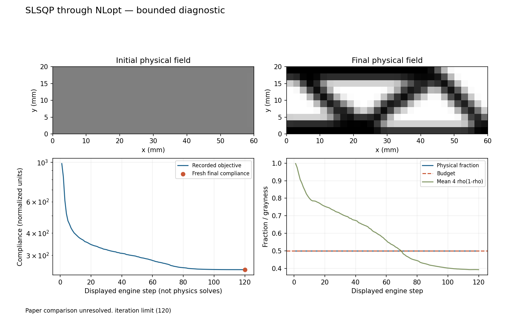
Original optimizer numerical example: identified figure and complete inputs pending; library documentation reviewed separately.
The coarse MBB companion checks adapter execution, not the source optimizer's paper figure or global optimality. Small steps, library success and feasibility are separate observations.
iteration limit (120); fresh compliance 248.971; fraction 0.500000; grayness 0.3931.
Description and math · Numerical evidence · Next check
Trust-constr through SciPy
Paper comparison: to fix · Execution checks: passed · Budget +1e-4: True · Extra constraints +1e-4: True
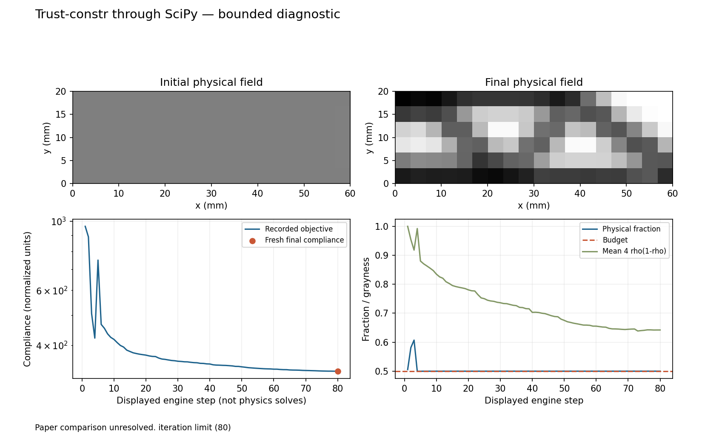
Original optimizer numerical example: identified figure and complete inputs pending; library documentation reviewed separately.
The coarse MBB companion checks adapter execution, not the source optimizer's paper figure or global optimality. Small steps, library success and feasibility are separate observations.
iteration limit (80); fresh compliance 329.998; fraction 0.499997; grayness 0.6421.
Description and math · Numerical evidence · Next check
CCSAQ through NLopt
Paper comparison: to fix · Execution checks: passed · Budget +1e-4: True · Extra constraints +1e-4: True
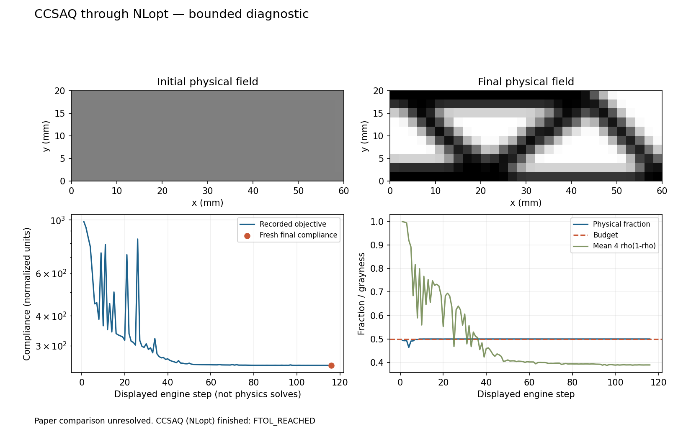
Original optimizer numerical example: identified figure and complete inputs pending; library documentation reviewed separately.
The coarse MBB companion checks adapter execution, not the source optimizer's paper figure or global optimality. Small steps, library success and feasibility are separate observations.
CCSAQ (NLopt) finished: FTOL_REACHED; fresh compliance 248.734; fraction 0.500000; grayness 0.3897.
Description and math · Numerical evidence · Next check
Augmented Lagrangian through NLopt
Paper comparison: to fix · Execution checks: passed · Budget +1e-4: True · Extra constraints +1e-4: True
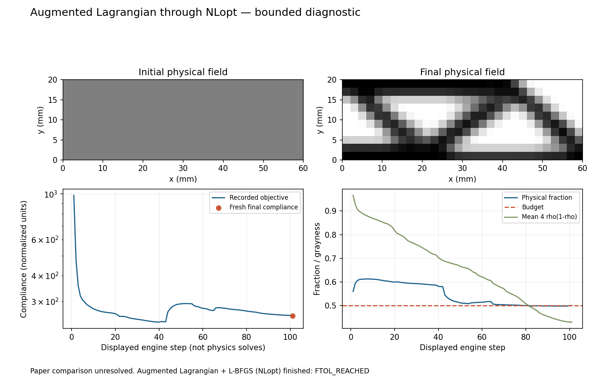
Original optimizer numerical example: identified figure and complete inputs pending; library documentation reviewed separately.
The coarse MBB companion checks adapter execution, not the source optimizer's paper figure or global optimality. Small steps, library success and feasibility are separate observations.
Augmented Lagrangian + L-BFGS (NLopt) finished: FTOL_REACHED; fresh compliance 254.544; fraction 0.500000; grayness 0.4302.
Description and math · Numerical evidence · Next check
Null-space gradient flow
Paper comparison: to fix · Execution checks: passed · Budget +1e-4: True · Extra constraints +1e-4: True
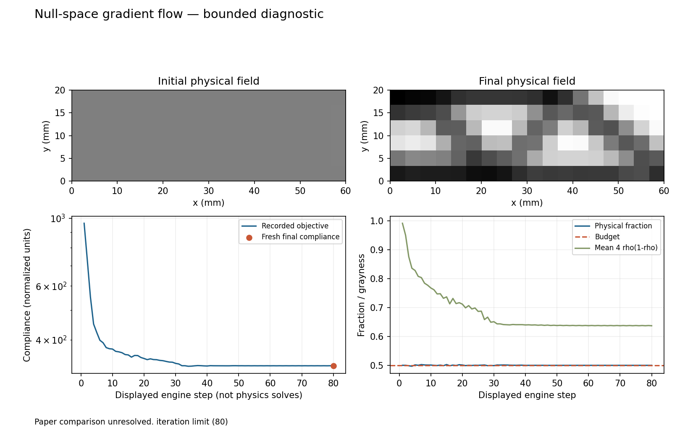
Original optimizer numerical example: identified figure and complete inputs pending; library documentation reviewed separately.
The coarse MBB companion checks adapter execution, not the source optimizer's paper figure or global optimality. Small steps, library success and feasibility are separate observations.
iteration limit (80); fresh compliance 328.997; fraction 0.499838; grayness 0.6369.
Description and math · Numerical evidence · Next check
MMC constant-thickness bars
Paper comparison: to fix · Execution checks: passed · Budget +1e-4: False · Extra constraints +1e-4: True
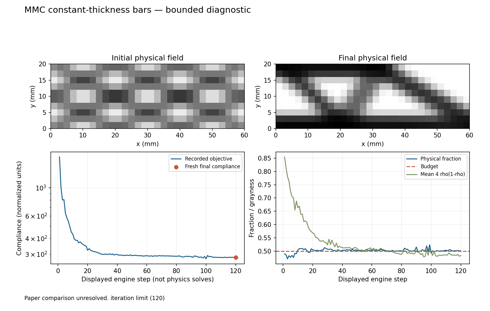
Guo et al., arXiv:1404.4820, Figure 8 component and zero contour; own geometry parameters.
Zero-contour construction is a controlled instance, not the paper image coordinates or optimized cantilever. Product union/tanh differ from the reference implementation.
iteration limit (120); fresh compliance 282.25; fraction 0.500535; grayness 0.4832.
Description and math · Numerical evidence · Next check
MMC variable-thickness bars
Paper comparison: to fix · Execution checks: passed · Budget +1e-4: False · Extra constraints +1e-4: True
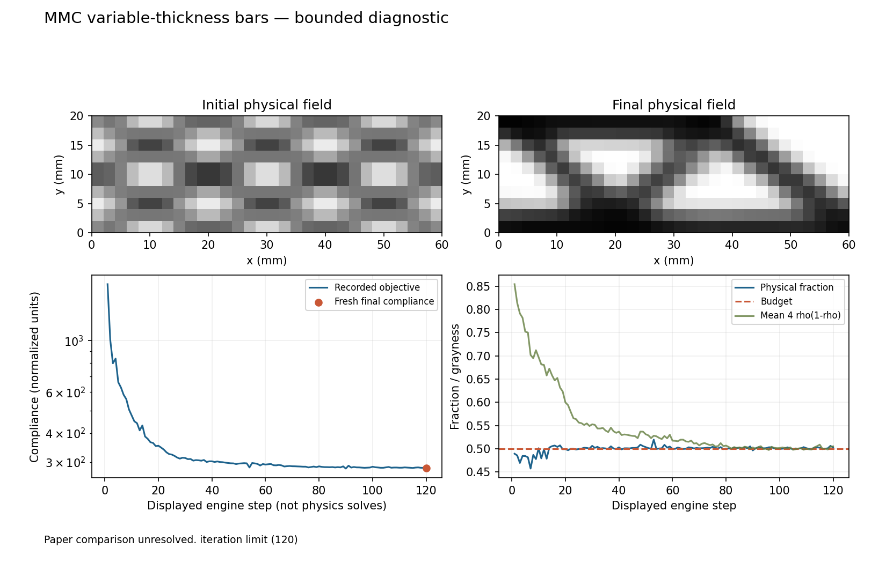
Zhang et al. (2016) variable-thickness MMC: exact numbered component/optimized panel pending.
Source and code thickness parameter ordering must be aligned before an MMC188 comparison. Tanh/product union and centre sampling are independent choices.
iteration limit (120); fresh compliance 282.765; fraction 0.502952; grayness 0.5052.
Description and math · Numerical evidence · Next check
MMV superelliptical holes
Paper comparison: to fix · Execution checks: passed · Budget +1e-4: False · Extra constraints +1e-4: True
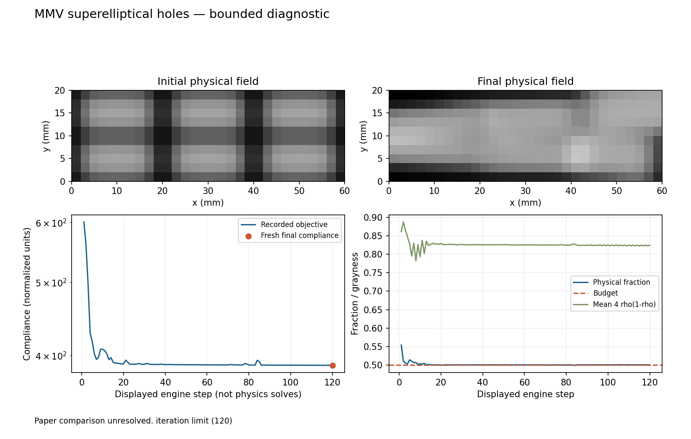
Zhang et al. (2017) 3D MMV: source geometry/panel incompatible with this restricted 2D variant.
The source uses 3D B-spline void surfaces and DOF removal; this variant cannot reproduce them and cannot nucleate new holes.
iteration limit (120); fresh compliance 388.071; fraction 0.500233; grayness 0.8249.
Description and math · Numerical evidence · Next check
B-spline density coefficients
Paper comparison: to fix · Execution checks: passed · Budget +1e-4: True · Extra constraints +1e-4: True
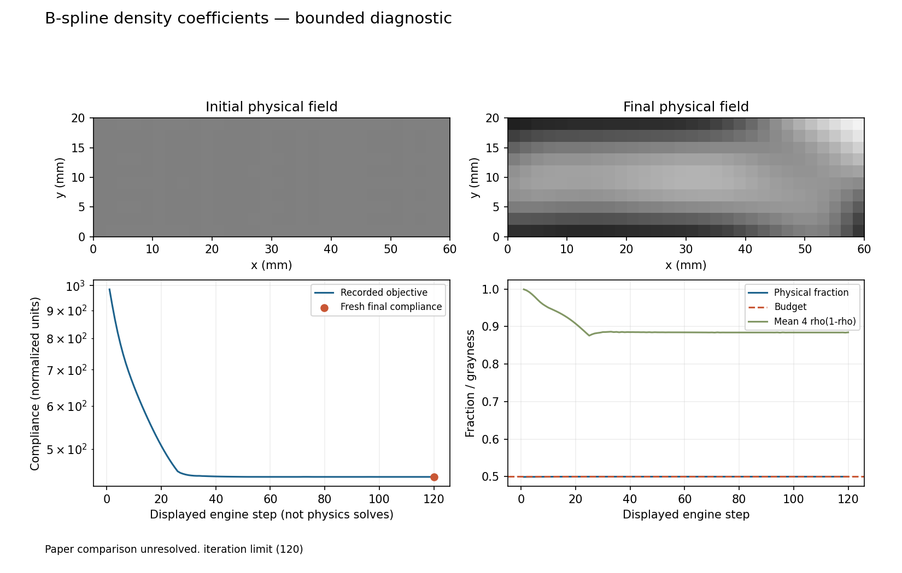
Qian (2013) B-spline density-space examples: numbered panel and original knots pending.
A controlled coefficient field and independent basis check do not reproduce an optimized paper topology or its knot refinement study.
iteration limit (120); fresh compliance 444.138; fraction 0.499967; grayness 0.8844.
Description and math · Numerical evidence · Next check
Geometry projection capsule bars
Paper comparison: to fix · Execution checks: passed · Budget +1e-4: True · Extra constraints +1e-4: True
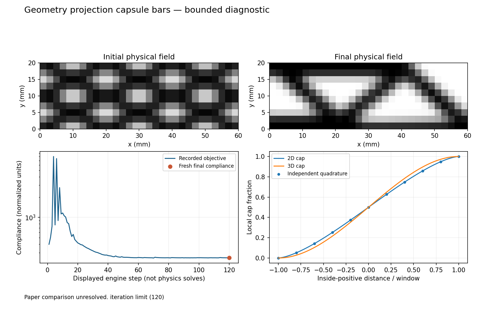
Smith-Norato (2020), Figure 1 geometry and equations 1-3: cap construction; optimized examples not reproduced.
The cap-integral comparison checks the construction with explicit inside-positive signs. Published HTML equation/sign conventions need care. Fixed radius, product union and separately penalized combined density differ from GPTO.
iteration limit (120); fresh compliance 250.938; fraction 0.500029; grayness 0.4023.
Description and math · Numerical evidence · Next check
Neural coordinate density
Paper comparison: to fix · Execution checks: passed · Budget +1e-4: True · Extra constraints +1e-4: True
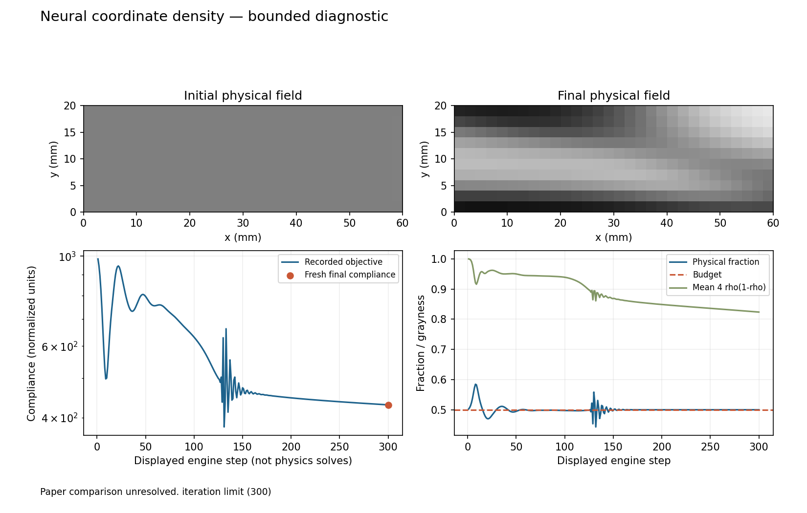
Chandrasekhar-Suresh TOuNN (2021): architecture/optimization figure alignment pending.
TOuNN uses batch-normalized LeakyReLU and AMSGrad rather than this tanh/Adam-AL variant. Gray fields, approximate volume and local optima remain possible.
iteration limit (300); fresh compliance 429.6; fraction 0.499913; grayness 0.8237.
Description and math · Numerical evidence · Next check
RBF level-set evolution
Paper comparison: to fix · Execution checks: passed · Budget +1e-4: False · Extra constraints +1e-4: True
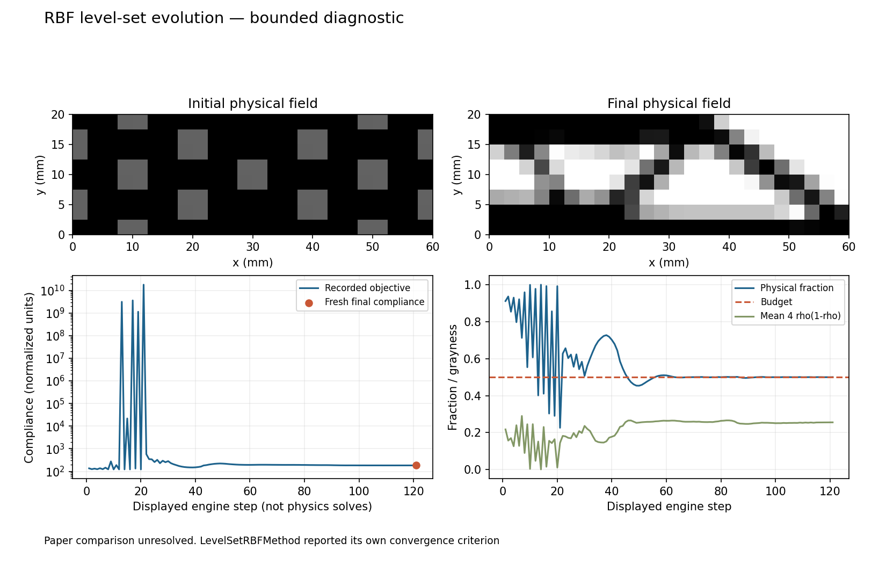
Wei et al. (2018) TOPRBF cantilever: numbered panel/settings pending.
Mean instead of median energy normalization, guarded rescaling and clipped field make this a numerical variant. Dense node matrices limit mesh size.
LevelSetRBFMethod reported its own convergence criterion; fresh compliance 183.065; fraction 0.500106; grayness 0.2557.
Description and math · Numerical evidence · Next check
Hamilton-Jacobi level-set evolution
Paper comparison: to fix · Execution checks: passed · Budget +1e-4: True · Extra constraints +1e-4: True
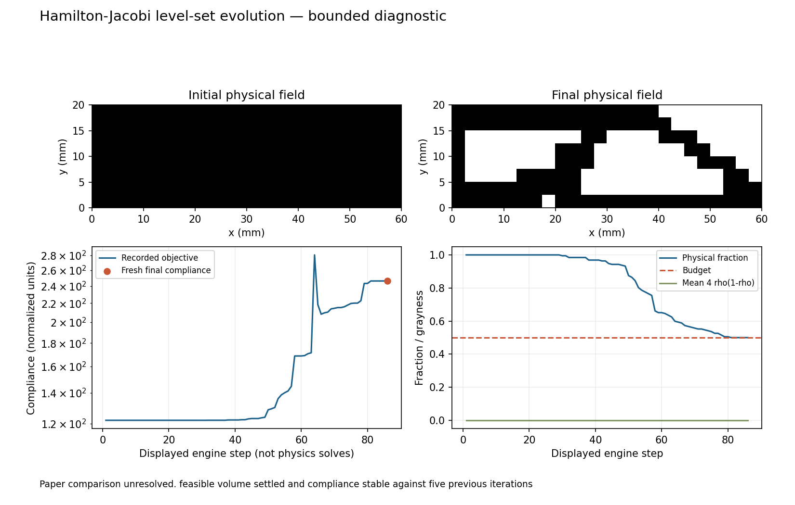
Challis (2010) HJ/topological-derivative examples: numbered panel/inputs pending.
Independent positive-inside, physically scaled variant with normalized AL feedback, EDT reinitialization and cell-centre sampling; not the source algorithm trajectory.
feasible volume settled and compliance stable against five previous iterations; fresh compliance 246.108; fraction 0.500000; grayness 0.0000.
Description and math · Numerical evidence · Next check
Reaction-diffusion level-set evolution
Paper comparison: to fix · Execution checks: passed · Budget +1e-4: True · Extra constraints +1e-4: True
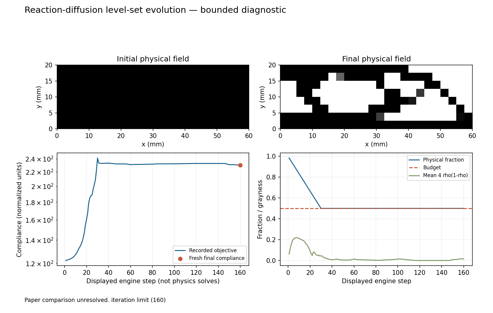
Otomori et al. (2015) reaction-diffusion examples: numbered panel/inputs pending.
Cell-centred backward Euler, cubic Heaviside and bisected volume differ from levelset88's augmented-Lagrangian feedback; source plane-stress tensor is not the circular-hole tensor.
iteration limit (160); fresh compliance 230.295; fraction 0.500000; grayness 0.0151.
Description and math · Numerical evidence · Next check